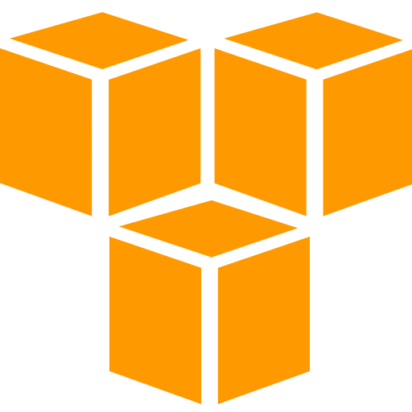
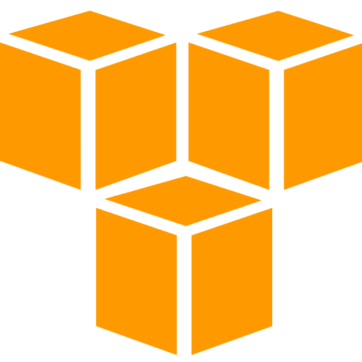

5 cosas sobre mí
1. Samuel
¡Hola! Mi nombre es Samuel. Nací en Diciembre de 1996 en el Estado de Hidalgo (México).
Estudié la
Licenciatura en Informática en la
Facultad de Estudios Superiores Cuautitlán, facultad multidisciplinaria
de la
Universidad Nacional Autónoma de México (UNAM).
Paralelamente me sigo formando diariamente sobre distintas tecnologías relacionadas en el Desarrollo de Frontend.
Paralelamente me sigo formando diariamente sobre distintas tecnologías relacionadas en el Desarrollo de Frontend.
2. CODERS
Durante la pandemia que vivió el mundo durante el 2020, nace la
necesidad de crear un proyecto relacionado a lo que más me apasiona,
la tecnología. Es así como comienza el proceso para la creacion de una
startup, CODERS.
3. Experiencia
Experiencia y habilidades en HTML5, CSS3, Javascript, Vue.Js, SASS/SCSS y Bootstrap.
Conocimiento práctico en herramientas de diseño como Figma y Adobe XD, también en software
de control de versiones Git y GitHub. Experiencia en Sistemas Operativos Windows
y Linux (Miembro inactivo de la FSF) y
manejo de servicios AWS para computación en la nube.
4. Habilidades de diseño
Intento crear diferentes conceptos de diseño a diario, puede ser cualquier cosa,
desde ejemplos simples de interfaz de usuario, hasta interacciones más complejas. Habitualmente
utilizo un enfoque creativo para resolver problemas.
Los detalles siempre son importantes.
Los detalles siempre son importantes.
5. Planificación
La etapa de planificación es posiblemente la más importante
para establecer el alcance de todo el proyecto. La comunicación y la atención
al detalle en la etapa de planificación es clave para una mejor experiencia para el usuario.